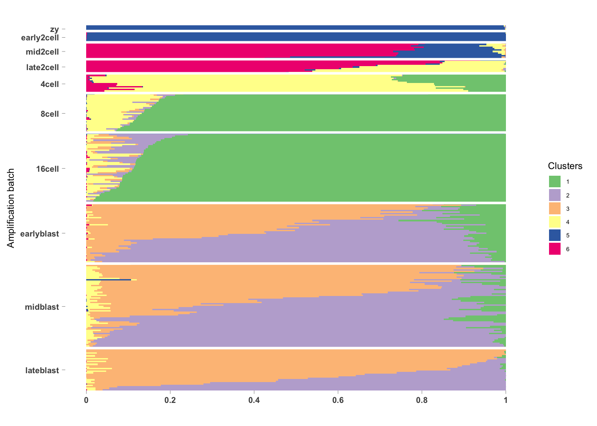
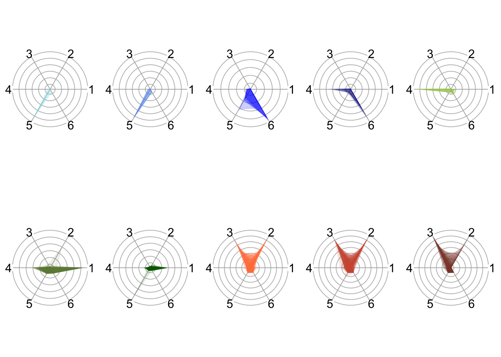

Last updated: 2018-11-16
workflowr checks: (Click a bullet for more information) ✔ R Markdown file: up-to-date
Great! Since the R Markdown file has been committed to the Git repository, you know the exact version of the code that produced these results.
✔ Environment: empty
Great job! The global environment was empty. Objects defined in the global environment can affect the analysis in your R Markdown file in unknown ways. For reproduciblity it’s best to always run the code in an empty environment.
✔ Seed:
set.seed(20181116)
The command set.seed(20181116) was run prior to running the code in the R Markdown file. Setting a seed ensures that any results that rely on randomness, e.g. subsampling or permutations, are reproducible.
✔ Session information: recorded
Great job! Recording the operating system, R version, and package versions is critical for reproducibility.
✔ Repository version: aede703
wflow_publish or wflow_git_commit). workflowr only checks the R Markdown file, but you know if there are other scripts or data files that it depends on. Below is the status of the Git repository when the results were generated:
Ignored files:
Ignored: .DS_Store
Ignored: .Rhistory
Ignored: .Rproj.user/
Ignored: data/E-MTAB-6268/
Ignored: data/buenrostro2018/
Ignored: docs/figure/
Unstaged changes:
Modified: analysis/_site.yml
Modified: analysis/about.Rmd
| File | Version | Author | Date | Message |
|---|---|---|---|---|
| Rmd | aede703 | jhsiao999 | 2018-11-16 | add new analysis |
library(CountClust)
data("MouseDeng2014.FitGoM")
#names(MouseDeng2014.FitGoM)
omega <- MouseDeng2014.FitGoM$clust_6$omega
annotation <- data.frame(
sample_id = paste0("X", c(1:NROW(omega))),
tissue_label = factor(rownames(omega),
levels = rev( c("zy", "early2cell",
"mid2cell", "late2cell",
"4cell", "8cell", "16cell",
"earlyblast","midblast",
"lateblast") ) ) )
rownames(omega) <- annotation$sample_id;
StructureGGplot(omega = omega,
annotation = annotation,
palette = RColorBrewer::brewer.pal(8, "Accent"),
yaxis_label = "Amplification batch",
order_sample = TRUE,
axis_tick = list(axis_ticks_length = .1,
axis_ticks_lwd_y = .1,
axis_ticks_lwd_x = .1,
axis_label_size = 7,
axis_label_face = "bold"))
library(plotrix)
library(RColorBrewer)
# make color scheme
cols <- c( rev(c("darkblue", "blue", "cornflowerblue", "cadetblue2")),
rev(c("darkgreen", "darkolivegreen4", "darkolivegreen3")),
rev(c("coral4", "coral3", "coral")) )
tissue_list <- as.character(unique(annotation$tissue_label))
tissue_n <- length(tissue_list)
omega_z <- do.call(cbind,lapply(1:ncol(omega), function(i) scale(omega[,i])))
par(mfrow=c(2,5))
for (i in 1:tissue_n) {
# if (i==1) {
# when_add <- F
# } else {
# when_add <- T
# }
ii <- which(annotation$tissue_label==tissue_list[i])
#plot_len <- omega_z[230,]
plot_pos <- seq(from=0, to=2*pi, length.out=7)
plot_len_matrix <- omega_z[ii,]
radial.plot(lengths=plot_len_matrix,
radial.pos=plot_pos[-length(plot_pos)],
main="", line.col=rep(scales::alpha(cols[i], .1),length(ii)),
lwd=1, rad.col="gray70", #show.grid=FALSE,
rp.type="p", poly.col=scales::alpha(cols[i], .1),
radlab=F,show.grid.labels=0, labels=c(1:6), cex.lab=.1,
mar=c(0,1,0,1),
add=F)
}
sessionInfo()R version 3.4.1 (2017-06-30)
Platform: x86_64-apple-darwin15.6.0 (64-bit)
Running under: macOS High Sierra 10.13
Matrix products: default
BLAS: /Library/Frameworks/R.framework/Versions/3.4/Resources/lib/libRblas.0.dylib
LAPACK: /Library/Frameworks/R.framework/Versions/3.4/Resources/lib/libRlapack.dylib
locale:
[1] en_US.UTF-8/en_US.UTF-8/en_US.UTF-8/C/en_US.UTF-8/en_US.UTF-8
attached base packages:
[1] stats graphics grDevices utils datasets methods base
other attached packages:
[1] RColorBrewer_1.1-2 plotrix_3.7-4 CountClust_1.6.2
[4] ggplot2_3.1.0
loaded via a namespace (and not attached):
[1] gtools_3.8.1 modeltools_0.2-22 tidyselect_0.2.5
[4] slam_0.1-43 purrr_0.2.5 reshape2_1.4.3
[7] lattice_0.20-38 colorspace_1.3-2 mapplots_1.5.1
[10] htmltools_0.3.6 stats4_3.4.1 mgcv_1.8-25
[13] yaml_2.2.0 rlang_0.3.0.1 R.oo_1.22.0
[16] pillar_1.3.0 glue_1.3.0 withr_2.1.2
[19] R.utils_2.7.0 bindrcpp_0.2.2 bindr_0.1.1
[22] plyr_1.8.4 stringr_1.3.1 munsell_0.5.0
[25] gtable_0.2.0 workflowr_1.1.1 R.methodsS3_1.7.1
[28] evaluate_0.12 knitr_1.20 permute_0.9-4
[31] flexmix_2.3-14 parallel_3.4.1 Rcpp_1.0.0
[34] scales_1.0.0 backports_1.1.2 limma_3.34.9
[37] vegan_2.5-3 maptpx_1.9-5 picante_1.7
[40] digest_0.6.18 stringi_1.2.4 Rtsne_0.15
[43] dplyr_0.7.8 grid_3.4.1 rprojroot_1.3-2
[46] cowplot_0.9.3 tools_3.4.1 magrittr_1.5
[49] lazyeval_0.2.1 tibble_1.4.2 cluster_2.0.7-1
[52] crayon_1.3.4 ape_5.2 whisker_0.3-2
[55] pkgconfig_2.0.2 Matrix_1.2-15 MASS_7.3-51.1
[58] SQUAREM_2017.10-1 assertthat_0.2.0 rmarkdown_1.10
[61] R6_2.3.0 boot_1.3-20 nlme_3.1-137
[64] nnet_7.3-12 git2r_0.23.0 compiler_3.4.1 This reproducible R Markdown analysis was created with workflowr 1.1.1